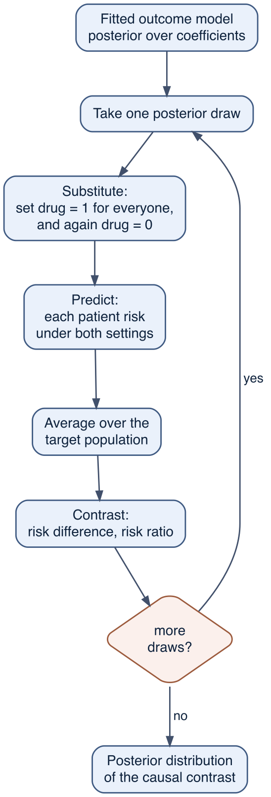
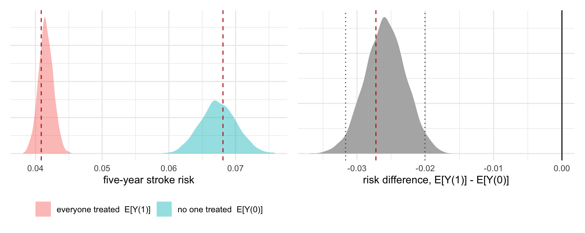
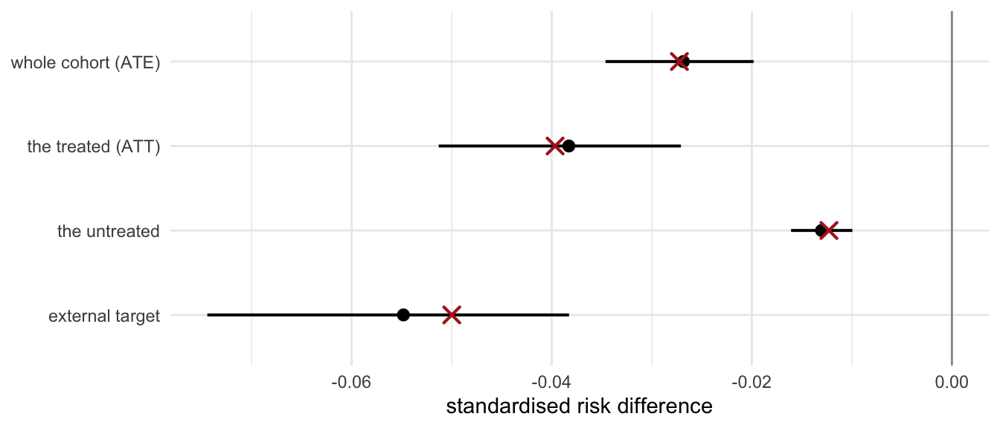
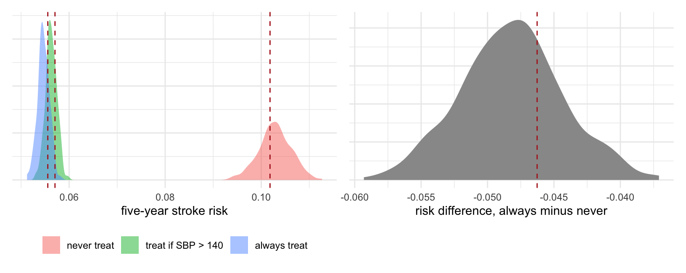

29 Bayesian g-computation and standardisation
The two threads of this book meet here. From Part II: a fitted model is not a set of point values but a posterior distribution over parameters, and every quantity derived from it inherits that distribution. From Part III: a causal effect is a contrast of potential outcomes, \(E[Y(1)] - E[Y(0)]\), recovered from data by standardising an outcome model over a covariate distribution. Putting the two together gives what this chapter is about: a posterior distribution over a causal contrast.
Nothing in the causal logic is new. Chapter 12 computed \(E[Y(a)]\) by hand, as a weighted average of within-stratum risks; Chapter 14 ran the same computation forward over visits; Chapter 15 ran it across four counterfactual worlds to split an effect into direct and indirect parts. What changes here is that the within-cell risks come from a Bayesian model, and the whole substitute-predict-average-contrast operation is carried out separately inside each posterior draw. The output is not an estimate with an interval attached to it afterwards. It is a distribution, and questions about the effect — is it protective, is it larger than some threshold, how many patients must be treated to prevent one stroke — are answered by counting draws.
This is the capstone chapter, so it also collects the three questions that a g-computation forces an analyst to answer and that earlier chapters deferred: which population the effect is standardised to, how much structure the outcome model imposes across treatment arms, and what happens when the treatment is a strategy sustained over time rather than a single decision. The chapter closes with what the method does not do, which is everything to do with whether the adjustment set was right in the first place.
29.1 The procedure
The identification result of Chapters 10 and 12 is the g-formula. If treatment \(A\) is conditionally exchangeable given covariates \(C\), if positivity holds, and if the treatment is well defined, then
\[ E[Y(a)] \;=\; \sum_{c} \underbrace{E[Y \mid A = a,\, C = c]}_{\text{a model can supply this}} \; \underbrace{P(C = c)}_{\text{the target population}} , \]
with an integral in place of the sum for continuous covariates. Chapter 12 estimated the first factor by a cell mean and the second by a cell count. A regression estimates the first factor by a fitted model, which is what allows continuous confounders to be used as the continuous variables they are. A Bayesian regression estimates it by a posterior distribution over fitted models, and that is the only change here.
The estimator is an algorithm rather than a formula. For one posterior draw \(\theta^{(s)}\):
- Substitute. Take the observed data set and overwrite every patient’s treatment with \(a = 1\). Do not touch anything else. Repeat with \(a = 0\).
- Predict. Using the coefficients of draw \(s\), predict every patient’s outcome risk under each of the two data sets. Confounders keep their observed values, so each patient is compared with themself.
- Average. Average the predicted risks over the target population, giving \(\widehat{E}[Y(1)]^{(s)}\) and \(\widehat{E}[Y(0)]^{(s)}\).
- Contrast. Take the difference, the ratio, or any other function of the two.
Repeating over all draws yields a sample from the posterior of the contrast.
Two features of the ordering matter, and both are places where a plausible-looking shortcut gives the wrong quantity.
Average over patients before contrasting. The estimand named in Chapter 10 is a contrast of two population averages, \(E[Y(1)] / E[Y(0)]\), not the average of individual contrasts \(E[Y(1)/Y(0)]\). On a ratio scale these differ whenever the effect varies across patients, and the difference is not small in this cohort; the numbers are given below, where the oracle can supply both. The ratio of averages is what a population-level decision needs, and it is what step 3 followed by step 4 computes.
Summarise the draws last. Steps 1 to 4 are performed within a draw. Substituting the posterior mean coefficients into the g-formula and running the steps once produces a single number with no distribution, and for a non-linear link that number is not the posterior mean of the contrast either. The loop is what carries the parameter uncertainty through to the causal quantity.
marginaleffects performs the whole loop on a brms fit: avg_predictions() for the two counterfactual risks, avg_comparisons() for their contrast, get_draws() to recover the underlying posterior sample.
29.2 The outcome model and the posterior of two worlds
We return to the cross-sectional master cohort — 50 000 hypertensive patients, the question of whether Drug A prevents stroke, and the confounding by indication that made the crude comparison reverse the sign of the effect in Chapter 12.
df <- simulate_cohort(n = 50000, seed = 2024)
df$age_c <- (df$age - 62) / 10 # base assignment keeps the oracle attribute
o <- attr(df, "oracle") # the answer key
truth_x <- cohort_truth(df)The adjustment set comes from the DAG of Chapter 11 and not from the data: severity, age and diabetes are the common causes of treatment and stroke. Blood pressure is a mediator and stays out (Chapter 15). The outcome is fitted with a log link — a Poisson working model, the Bayesian counterpart of modified-Poisson regression1 — so that the drug enters as a multiplicative factor on risk and the model’s parameters are log risk ratios (Chapter 24). Priors are weakly informative on that scale: an intercept centred on a baseline five-year stroke risk of about 5%, and coefficients that put most of their mass on risk ratios between about 0.4 and 2.5.
pri <- c(prior(normal(-3, 1), class = "Intercept"), # log baseline risk
prior(normal(0, 0.5), class = "b")) # log risk ratios
m_add <- brm(stroke ~ drug + severity + age_c + diabetes,
family = poisson(), data = df, prior = pri,
chains = 4, iter = 1000, warmup = 500, seed = 1,
file = "models/ch28g_main", file_refit = "on_change")Show code
c(max_rhat = max(brms::rhat(m_add), na.rm = TRUE),
divergent = sum(subset(brms::nuts_params(m_add), Parameter == "divergent__")$Value)) max_rhat divergent
1.004636 0.000000 The sampler has converged and produced no divergent transitions, so the draws can be treated as a sample from the posterior. That is the whole of the fitting stage; the diagnostic workflow that surrounds it — prior predictive checks, posterior predictive checks, loo comparisons of functional form within a fixed adjustment set — is the subject of Chapter 22 and is not repeated here.
Now the g-computation. Each of the two counterfactual worlds is a posterior distribution in its own right, and it is worth looking at them before their contrast.
w1 <- get_draws(avg_predictions(m_add, variables = list(drug = 1))) # everyone treated
w0 <- get_draws(avg_predictions(m_add, variables = list(drug = 0))) # no one treated
stopifnot(identical(w1$drawid, w0$drawid)) # the two worlds share their draws
EY1 <- w1$draw; EY0 <- w0$draw
rd <- EY1 - EY0 # risk difference, per draw
rr <- EY1 / EY0 # risk ratio, per drawThe two worlds are computed from the same draws, so they are paired: within draw \(s\) the only difference between EY1[s] and EY0[s] is the treatment that was substituted. That pairing is what makes their difference a posterior draw of the causal effect rather than a difference of two independent estimates.

| quantity | posterior mean (95% CrI) | truth |
|---|---|---|
| E[Y(0)]: risk if none treated | 0.0674 (0.0622, 0.0727) | 0.0681 |
| E[Y(1)]: risk if all treated | 0.0416 (0.0394, 0.0438) | 0.0409 |
| risk difference | -0.0259 (-0.0317, -0.0201) | -0.0272 |
| risk ratio | 0.618 (0.561, 0.680) | 0.600 |
| number needed to treat | 39.2 (31.6, 49.9) | 36.7 |
Treating the whole cohort would lower five-year stroke risk from 0.067 to 0.042, a risk difference of -0.0259 with a 95% credible interval from -0.0317 to -0.0201. The oracle’s value, -0.0272, is inside that interval. On the ratio scale the drug multiplies risk by 0.618 against a true 0.600.
This is the point at which the ordering rule stated earlier can be checked against the answer key. The estimand is the ratio of the two average risks, and the oracle puts it at 0.600. Averaging each patient’s own risk ratio instead gives 0.646 — a different quantity, larger here because the patients with the smallest ratios are the ones carrying the most risk, and an unweighted average over people does not know that. Both are computable; only the first answers the question of what treating this population would do.
Because the answer is a distribution, decision-relevant questions are answered by counting draws, with no hypothesis test involved:
c(`P(drug is protective)` = mean(rd < 0),
`P(RD better than -0.02)` = mean(rd < -0.02),
`P(RD better than -0.03)` = mean(rd < -0.03),
`P(NNT below 40)` = mean(-1 / rd < 40)) P(drug is protective) P(RD better than -0.02) P(RD better than -0.03)
1.0000 0.9755 0.0835
P(NNT below 40)
0.6105 Every draw is negative, so on this model and this adjustment set the drug is protective with probability indistinguishable from one. A reduction of at least two percentage points is well supported; three points is not. The number needed to treat has posterior mean 39.2 with an interval running from 31.6 to 49.9, and that interval — not the point — is what a cost-effectiveness calculation should carry forward.
29.3 Against the earlier chapters
Chapter 12 estimated the same quantity on the same cohort, first by binning the confounders and averaging cell risks, then by inverse-probability weighting. Both are recomputed here so the comparison is on identical data.
The Chapter 12 comparators, recomputed on this cohort
crude <- df |> group_by(drug) |> summarise(r = mean(stroke), .groups = "drop")
crude_rd <- crude$r[2] - crude$r[1]; crude_rr <- crude$r[2] / crude$r[1]
bins <- function(x, k) cut(x, quantile(x, seq(0, 1, length = k + 1)), include.lowest = TRUE)
strata_df <- df |>
mutate(stratum = interaction(bins(severity, 20), bins(age, 4), diabetes, drop = TRUE))
std <- strata_df |>
group_by(stratum) |>
summarise(w = n(), r1 = mean(stroke[drug == 1]), r0 = mean(stroke[drug == 0]),
.groups = "drop") |>
mutate(w = w / sum(w)) |>
summarise(EY1 = sum(w * r1, na.rm = TRUE), EY0 = sum(w * r0, na.rm = TRUE))
std_rd <- std$EY1 - std$EY0; std_rr <- std$EY1 / std$EY0
ipw <- strata_df |>
group_by(stratum) |> mutate(e = mean(drug)) |> ungroup() |>
mutate(w = if_else(drug == 1, 1 / e, 1 / (1 - e))) |>
group_by(drug) |> summarise(EY = weighted.mean(stroke, w), .groups = "drop")
ipw_rd <- ipw$EY[2] - ipw$EY[1]; ipw_rr <- ipw$EY[2] / ipw$EY[1]
m_gl <- glm(stroke ~ drug + severity + age_c + diabetes, family = poisson, data = df)
gl_r <- \(a) mean(predict(m_gl, transform(df, drug = a), type = "response"))
gl_rd <- gl_r(1) - gl_r(0); gl_rr <- gl_r(1) / gl_r(0)| analysis | risk difference | risk ratio | interval, and how it would be obtained |
|---|---|---|---|
| crude comparison | 0.0234 | 1.672 | not reported; closed form |
| standardisation, 20 severity bins (ch. 12) | -0.0244 | 0.631 | not reported; bootstrap over the binning and the cell means |
| inverse-probability weighting (ch. 12) | -0.0245 | 0.630 | not reported; bootstrap that refits the propensity model |
| regression standardisation, glm (ch. 12) | -0.0262 | 0.613 | not reported; delta method |
| Bayesian g-computation | -0.0259 (-0.0317, -0.0201) | 0.618 (0.561, 0.680) | full posterior, from the same loop |
| truth (oracle) | -0.0272 | 0.600 | - |
The crude comparison has the wrong sign. Coarse standardisation corrects the sign but plateaus short of the truth, because a strong continuous confounder cut into bins leaves a residue of confounding inside each bin — the finding of Chapter 12. Replacing cell means with a model that uses severity as the continuous variable it is closes most of the remaining gap, and the frequentist and Bayesian versions of that model agree on the point estimate to within rounding, as they should: they are the same standardisation applied to almost the same fit.
What the Bayesian version adds is not accuracy but the interval, and the interval comes from a posterior distribution over the causal contrast, from which probability statements follow directly. It also propagates uncertainty through non-linear transformations without further work: the number needed to treat above is the reciprocal of a posterior, so its interval is the reciprocal of the risk-difference interval.
The last column of the table deserves a comment, because the four frequentist rows do not all face the same difficulty. Standardising a fitted glm produces a quantity that is a smooth function of the estimated coefficients, so the delta method applies directly, and it is what marginaleffects uses by default for any model it supports. Weighting is different. The weights are not known constants; they are predictions from a propensity model fitted to the same data, and an interval that conditions on them as though they were fixed answers the wrong question. The direction of the error depends on the estimand and the model. For the average treatment effect in the standard case, ignoring the estimation of the propensity score is conservative, because using the estimated score in place of the true one lowers the asymptotic variance.2 In other settings it is not conservative at all: in simulations of inverse-probability-weighted survival models, both the naive and the robust sandwich variance estimators produced biased standard errors and intervals with incorrect coverage, and only a bootstrap that refitted the propensity model within each resample achieved close to nominal coverage.3 The rule of thumb is that any uncertainty statement about a weighted estimate must be generated by a procedure that regenerates the weights.
The outcome-modelling route used throughout this chapter avoids the problem rather than solving it, since it never estimates a weight. That is a reason to prefer it in a Bayesian workflow, not a reason to think the difficulty has been disposed of: the corresponding question for weighted estimators — whether and how the uncertainty in estimated weights belongs in a Bayesian posterior — is a genuinely unsettled one, and is taken up at the end of the chapter.
29.4 How much structure to impose
The model fitted above is additive in the treatment: drug enters with one coefficient, so the model asserts that the drug multiplies risk by the same factor in every patient. That is an assumption about effect homogeneity on the log scale, and it is not implied by the causal question. The alternative is to let the treatment interact with every covariate.
m_sat <- brm(stroke ~ drug * (severity + age_c + diabetes),
family = poisson(), data = df, prior = pri,
chains = 4, iter = 1000, warmup = 500, seed = 1,
file = "models/ch28g_sat", file_refit = "on_change")This model is saturated in the exposure: it has as many free parameters as fitting the outcome separately in the treated and the untreated. Standardising it to the whole cohort is therefore the same operation as fitting two arm-specific models and standardising both to the same population, which is how Chapter 23 described a fully interacted specification.
The two-arm equivalent, fitted separately and standardised to the same cohort
m_arm1 <- brm(stroke ~ severity + age_c + diabetes, family = poisson(),
data = subset(df, drug == 1), prior = pri,
chains = 4, iter = 1000, warmup = 500, seed = 1,
file = "models/ch28g_arm1", file_refit = "on_change")
m_arm0 <- brm(stroke ~ severity + age_c + diabetes, family = poisson(),
data = subset(df, drug == 0), prior = pri,
chains = 4, iter = 1000, warmup = 500, seed = 1,
file = "models/ch28g_arm0", file_refit = "on_change")
arm_rd <- mean(rowMeans(posterior_epred(m_arm1, newdata = df, ndraws = 200))) -
mean(rowMeans(posterior_epred(m_arm0, newdata = df, ndraws = 200)))| model | risk difference | 95% CrI | interval width |
|---|---|---|---|
| additive: drug + confounders | -0.0259 | [-0.0317, -0.0201] | 0.0116 |
| saturated: drug x confounders | -0.0268 | [-0.0346, -0.0198] | 0.0148 |
| two arm-specific models, standardised | -0.0274 | - | - |
| truth (oracle) | -0.0272 | - | - |
The saturated model lands closer to the truth and carries a wider interval — about 27% wider here. That is the trade in both directions. The additive model borrows the covariate structure of one arm to describe the other, which uses the data more efficiently; the price is a homogeneity assumption that, when wrong, biases the standardised contrast. The saturated model assumes nothing across arms and pays in precision. The two arm-specific fits give -0.0274, close to the saturated model as expected, since the two specifications span the same set of fitted risks. They are not identical because the interacted parametrisation places its prior on the difference between arms rather than on each arm separately, so the two are shrunk differently.
The saturated model is also the one that can be asked about effect modification, since the additive model has assumed the answer.
rd_dm <- avg_comparisons(m_sat, variables = "drug", by = "diabetes")
rr_dm <- avg_comparisons(m_sat, variables = "drug", by = "diabetes",
comparison = "ratioavg")| subgroup | risk difference | true RD | risk ratio |
|---|---|---|---|
| no diabetes | -0.0188 [-0.0238, -0.0137] | -0.0177 | 0.600 [0.529, 0.679] |
| diabetes | -0.0520 [-0.0753, -0.0324] | -0.0572 | 0.620 [0.525, 0.727] |
The drug prevents roughly 2.8 times as many strokes per treated patient among diabetics as among non-diabetics, while the risk ratio is close to constant across the two groups. This is the scale-dependence of Chapter 16, recovered from the fitted model: the same effect shows strong modification on the additive scale and almost none on the multiplicative scale, because diabetes shifts baseline risk and the drug acts multiplicatively. Which scale to report is decided by the decision at hand — additive for how many events a treatment programme would avert, multiplicative for whether the effect is likely to carry to a population with a different baseline risk.
29.5 Which population?
The g-formula has two factors, and only the first is a model of the data. The second, \(P(C = c)\), is a choice. Nothing about the fitted model tells us which population to average over, and the answer changes the estimand — as soon as the effect varies across patients, “the effect of the drug” is not a single number.
Averaging over the whole cohort gives the average treatment effect (ATE). Averaging over the covariates of the treated only gives the effect of treatment on the treated (ATT), the quantity relevant to withdrawing a drug from those currently receiving it. Averaging over the untreated gives the effect of extending treatment to those not now getting it. Averaging over an external population’s covariate distribution transports the effect to that population.4
The last of these needs a target. We construct one by resampling the cohort towards an older, far more diabetic population, and — because the oracle columns travel with the rows — we can read off the true effect in that target as well.
set.seed(3)
wt <- exp(0.6 * df$age_c + 0.8 * df$diabetes) # a stated target profile
tid <- sample(nrow(df), nrow(df), replace = TRUE, prob = wt)
tgt <- df[tid, ] # the external target population
targets <- list(
`whole cohort (ATE)` = list(nd = df, idx = seq_len(nrow(df))),
`the treated (ATT)` = list(nd = subset(df, drug == 1), idx = which(df$drug == 1)),
`the untreated` = list(nd = subset(df, drug == 0), idx = which(df$drug == 0)),
`external target` = list(nd = tgt, idx = tid)
)
target_res <- imap(targets, \(t, nm) {
a <- avg_comparisons(m_sat, variables = "drug", newdata = t$nd)
tibble(target = nm, estimate = a$estimate, lo = a$conf.low, hi = a$conf.high,
truth = mean(o$risk1[t$idx] - o$risk0[t$idx]),
age = mean(df$age[t$idx]), dm = mean(df$diabetes[t$idx]))
}) |> list_rbind()
| target | mean age | % diabetic | estimate [95% CrI] | truth in that population |
|---|---|---|---|---|
| whole cohort (ATE) | 62.1 | 24 | -0.0268 [-0.0346, -0.0198] | -0.0272 |
| the treated (ATT) | 64.3 | 31 | -0.0383 [-0.0513, -0.0271] | -0.0397 |
| the untreated | 59.4 | 16 | -0.0130 [-0.0161, -0.0099] | -0.0123 |
| external target | 69.9 | 49 | -0.0548 [-0.0744, -0.0383] | -0.0500 |
The effect in the external target, -0.0548, is about 2 times as large as the effect in the study cohort, and the oracle confirms that this is a real feature of the population rather than an artefact of the estimator. The drug has not become more effective; the target population has a higher baseline risk, and a nearly constant risk ratio applied to a higher baseline gives a larger absolute benefit. The ordering of the four rows follows the same logic: the treated are the sicker patients, so the effect among them exceeds the cohort average, and the effect among the untreated falls below it.
Three conditions have to hold for such a transported estimate to mean anything, and they are stronger than the conditions for the ATE.5 Every covariate that modifies the effect must be measured and included in the outcome model, since the model is what carries the effect from one covariate distribution to the other. The target’s covariate values must be represented in the study data — a positivity condition on the target rather than on treatment — or the model is extrapolating rather than standardising. And the conditional outcome model must be valid in the target, which is a substantive claim about whether the two populations differ in ways the covariates capture. The further the target is pushed from the study population, the more of the answer is supplied by the model’s functional form rather than by data, and the point estimate drifts even while the credible interval stays wide enough to cover the truth. Exercise 3 makes that drift visible.6
29.5.1 The covariate distribution is also estimated
A subtlety hides in the averaging step. The standardised contrast above is an average over the covariates of this sample, so the interval describes the effect in a population with precisely this covariate mix. If the interest is instead in the population the sample was drawn from, the covariate distribution itself carries sampling uncertainty, which the standard calculation does not include. A Bayesian bootstrap makes it explicit: instead of weighting every patient equally in step 3, draw the weights from a Dirichlet distribution.7
set.seed(5)
sub <- df[sample(nrow(df), 8000), ] # a subsample keeps this cheap
E1 <- posterior_epred(m_sat, newdata = transform(sub, drug = 1), ndraws = 500)
E0 <- posterior_epred(m_sat, newdata = transform(sub, drug = 0), ndraws = 500)
rd_fixed <- rowMeans(E1) - rowMeans(E0) # equal weights: this sample
W <- matrix(rexp(length(E1)), nrow(E1)) # Dirichlet weights, one row per draw
W <- W / rowSums(W)
rd_bb <- rowSums(W * E1) - rowSums(W * E0) # covariate mix resampled too| covariate distribution | risk difference | interval width |
|---|---|---|
| held at the sample (standard) | -0.0280 (-0.0369, -0.0204) | 0.0165 |
| Dirichlet-reweighted | -0.0280 (-0.0372, -0.0201) | 0.0171 |
The interval widens by only about 4%, because 8 000 patients pin down a three-variable covariate distribution well. The point is not the size of the correction but what the standard interval means: it is conditional on the covariate distribution used in the averaging step. In small samples, or when standardising to a target described by few observations, the difference is material.
29.6 Over time: the g-formula for a sustained strategy
Everything so far treats the drug as a single decision. Chapter 14 showed why that is not enough when treatment is repeated and the variables driving it are themselves changed by it: blood pressure at a visit confounds that visit’s treatment decision and mediates the previous one, so no single outcome regression can be right. The parametric g-formula resolved it by modelling how blood pressure evolves and simulating the cohort forward under each strategy. Chapter 14 did that with lm and glm fits, and obtained point estimates. Here the same simulation runs once per posterior draw.
obs <- simulate_cohort_longitudinal(n = 50000, seed = 2024)
truth_l <- attr(obs, "truth")
K <- max(obs$k)
obs$sbp_c <- (obs$sbp - 140) / 10 # current blood pressure, per 10 mmHg
obs$sbp_lag_c <- (obs$sbp_lag - 140) / 10 # what the clinician saw when decidingTwo models are needed: a law of motion for the time-varying confounder, and a hazard model for the outcome. Both are fitted on the person-period data, on the observed treatment.
pri_sbp <- c(prior(normal(0, 5), class = "Intercept"),
prior(normal(0, 2), class = "b"),
prior(exponential(1), class = "sigma"))
pri_haz <- c(prior(normal(-4, 1.5), class = "Intercept"),
prior(normal(0, 1), class = "b"))
m_sbp <- brm(sbp_c ~ sbp_lag_c + A + severity + age_c,
family = gaussian(), data = obs, prior = pri_sbp,
chains = 4, iter = 600, warmup = 300, seed = 1,
file = "models/ch28g_sbp", file_refit = "on_change")
m_haz <- brm(Y ~ sbp_c + A + severity + age_c + diabetes,
family = bernoulli(), data = obs, prior = pri_haz,
chains = 4, iter = 600, warmup = 300, seed = 1,
file = "models/ch28g_haz", file_refit = "on_change")The forward simulation is the loop of Chapter 14 with one change: it is executed inside a posterior draw, using that draw’s coefficients throughout. Because both models are linear in their parameters, the whole loop can be run for all draws at once as matrix arithmetic — each row of the matrices below is one posterior draw, each column one patient.
Bs <- as.matrix(m_sbp); Bh <- as.matrix(m_haz)
set.seed(7)
S <- 400 # posterior draws carried forward
M <- 5000 # Monte Carlo sample of baselines
b0 <- obs |> filter(k == 1) |> slice_sample(n = M) # everyone starts at a real baseline
dr <- sort(sample(nrow(Bs), S))
## the parts of each linear predictor that never change during the follow-up
fix_s <- Bs[dr, c("b_Intercept", "b_severity", "b_age_c")] %*%
t(cbind(1, b0$severity, b0$age_c))
fix_h <- Bh[dr, c("b_Intercept", "b_severity", "b_age_c", "b_diabetes")] %*%
t(cbind(1, b0$severity, b0$age_c, b0$diabetes))
b_lag <- Bs[dr, "b_sbp_lag_c"]; b_A_s <- Bs[dr, "b_A"]; sg <- Bs[dr, "sigma"]
c_sbp <- Bh[dr, "b_sbp_c"]; c_A <- Bh[dr, "b_A"]
set.seed(11)
E <- array(rnorm(S * M * K), c(S, M, K)) # shocks shared across strategies
gformula <- function(rule) { # rule(sbp_prev, A_prev) -> 0/1
sbp_prev <- matrix(b0$sbp_lag_c, S, M, byrow = TRUE)
A_prev <- matrix(0, S, M)
surv <- matrix(1, S, M)
for (k in 1:K) {
A <- 1 * rule(sbp_prev, A_prev) # the strategy sets treatment
sbp <- fix_s + b_lag * sbp_prev + b_A_s * A + sg * E[, , k] # re-simulate, do not fix
haz <- plogis(fix_h + c_sbp * sbp + c_A * A)
surv <- surv * (1 - haz)
sbp_prev <- sbp; A_prev <- A
}
rowMeans(1 - surv) # one five-year risk per draw
}
r_always <- gformula(\(s, a) 1)
r_never <- gformula(\(s, a) 0)
r_dyn <- gformula(\(s, a) (s > 0) | (a == 1)) # treat if SBP above 140, then stay onThree details carry the causal logic, and each mirrors a step of Chapter 14. Treatment is set by the strategy rather than taken from the data, which is the intervention. Blood pressure is re-simulated from a model containing A rather than held at its observed value, which is what keeps the mediated path from treatment through blood pressure to stroke alive; holding it fixed would sever that path, the same failure as conditioning on it in a regression. And the simulated blood pressure is carried forward into the next visit, which is what lets the effect compound across visits.
Two details are specific to the Bayesian version. The draws are paired across strategies: row \(s\) of the always-treat matrix and row \(s\) of the never-treat matrix use the same coefficients, so their difference is a posterior draw of the strategy contrast. And the random shocks E are generated once and reused by every strategy, so the Monte Carlo noise of the simulation cancels in the contrast instead of adding to it — the same device the cohort generator uses to define its own counterfactuals.

| quantity | posterior mean (95% CrI) | truth |
|---|---|---|
| risk under always treat | 0.0547 (0.0523, 0.0569) | 0.0556 |
| risk under never treat | 0.1029 (0.0963, 0.1092) | 0.1018 |
| risk under treat-if-SBP-high | 0.0563 (0.0540, 0.0584) | 0.0571 |
| risk difference, always vs never | -0.0482 (-0.0556, -0.0404) | -0.0463 |
| risk ratio, always vs never | 0.532 (0.488, 0.581) | 0.546 |
Sustained treatment lowers five-year stroke risk by -0.0482 (95% credible interval -0.0556 to -0.0404) against the true -0.0463. The three estimators of Chapter 14 are recomputed below on the same cohort, so the comparison is on identical data.
The Chapter 14 estimators, recomputed on this cohort
lo <- obs
lo$kf <- factor(lo$k)
b_l <- lo |> filter(k == 1) |> select(age_c, diabetes, severity)
sbp_b1 <- (lo |> filter(k == 1))$sbp_lag
strategy_risk <- function(model, cum_at) { # cum_at(k): treated count under the strategy
surv <- rep(1, nrow(b_l))
for (k in 1:K) {
nd <- b_l |> mutate(cum_A = cum_at(k), kf = factor(k, levels = levels(lo$kf)))
surv <- surv * (1 - predict(model, nd, type = "response"))
}
mean(1 - surv)
}
rd_av_nv <- function(model) strategy_risk(model, \(k) k) - strategy_risk(model, \(k) 0)
## (i) adjust for baseline only: confounded by the time-varying blood pressure
naive_rd <- rd_av_nv(glm(Y ~ cum_A + age_c + diabetes + severity + kf,
family = binomial, data = lo))
## (ii) stabilised IP weights, then a marginal structural model
den <- glm(A ~ A_lag + sbp_lag_c + severity + age_c + diabetes + kf, binomial, lo)
num <- glm(A ~ A_lag + severity + age_c + diabetes + kf, binomial, lo)
lo <- lo |>
mutate(p_den = predict(den, type = "response"),
p_num = predict(num, type = "response"),
contrib = if_else(A == 1, p_num / p_den, (1 - p_num) / (1 - p_den))) |>
group_by(id) |> mutate(sw = cumprod(contrib)) |> ungroup()
tr <- quantile(lo$sw, c(0.01, 0.99))
lo <- lo |> mutate(sw = pmin(pmax(sw, tr[1]), tr[2]))
ipw_rd_l <- rd_av_nv(glm(Y ~ cum_A + age_c + diabetes + severity + kf,
family = quasibinomial, weights = sw, data = lo))
## (iii) the same forward simulation, from lm / glm point estimates
sbp_f <- lm(sbp ~ sbp_lag + A + severity + age_c, data = lo)
haz_f <- glm(Y ~ sbp + A + severity + age_c + diabetes, family = binomial, data = lo)
gform_freq <- function(set_drug) {
set.seed(7)
sbp_prev <- sbp_b1; surv <- rep(1, nrow(b_l))
for (k in 1:K) {
mu <- predict(sbp_f, mutate(b_l, sbp_lag = sbp_prev, A = set_drug))
sbp <- mu + rnorm(length(mu), 0, sigma(sbp_f))
haz <- predict(haz_f, mutate(b_l, sbp = sbp, A = set_drug), type = "response")
surv <- surv * (1 - haz); sbp_prev <- sbp
}
mean(1 - surv)
}
gfreq_rd <- gform_freq(1) - gform_freq(0)| method | risk difference, always vs never | uncertainty |
|---|---|---|
| naive: adjust for baseline only (ch. 14) | -0.0293 | none reported |
| IP-weighted marginal structural model (ch. 14) | -0.0351 | none reported |
| parametric g-formula, lm / glm (ch. 14) | -0.0485 | none reported |
| Bayesian g-formula | -0.0482 (-0.0556, -0.0404) | full posterior |
| truth (oracle) | -0.0463 | - |
Adjusting for baseline covariates alone leaves the time-varying confounding in place and recovers only about 63% of the true effect. Weighting recovers most of the rest, and the two g-formulas — the lm/glm version of Chapter 14 and the Bayesian version here — agree to 0.0003 on the risk-difference scale, as they should: they are the same forward simulation, run from point estimates in one case and from posterior draws in the other. What the Bayesian version adds is the interval, and the interval covers the truth. Note that it also lies slightly beyond it: both g-formulas overshoot the true -0.0463 a little, because the fitted hazard and blood-pressure models are close to, but not identical with, the equations that generated the data. The dynamic strategy — treat when blood pressure exceeds 140 mmHg and continue thereafter — reaches a risk of 0.0563 against 0.0547 for treating everyone at every visit, so most of the available benefit is obtained by treating when indicated. That comparison is the reason to want strategy contrasts at all, and standard regression cannot produce it, because a dynamic strategy is defined through the very variable the regression would have to condition on.
Two sources of variation are now mixed in the output. Posterior uncertainty comes from not knowing the true coefficients; Monte Carlo error comes from simulating a finite number of patients (M) with a finite number of draws (S). Only the first is a statement about the world. Monte Carlo error is reduced by raising M and S until the answer stops moving, which is a computational check rather than an inferential one.
29.7 What g-computation does not fix
The chapter has produced narrow intervals around quantities that match a known truth, and that is a feature of a simulation in which the adjustment set is known and the models are nearly correct. None of the machinery supplies either of those things.
Identification comes first, and no fit can audit it. The estimate is a causal effect only if the covariates in the model block every back-door path (Chapter 11). If a confounder is missing, the g-computation delivers a precise posterior centred on the wrong number, and the posterior gives no hint of the problem — it describes uncertainty about parameters given the model, and a missing confounder is not a parameter. This is the error that destroyed the mediation estimate of Chapter 15 when severity was hidden. The tool for it is a sensitivity analysis that asks how strong an unmeasured confounder would have to be to overturn the conclusion (Chapter 19), and priors are not a substitute: widening a prior on a coefficient that is in the model says nothing about a variable that is not.
Positivity is doing work that is easy to miss. The g-formula predicts every patient under both treatments, including patients whose observed treatment was nearly certain. In those regions the prediction is extrapolation from the model’s functional form rather than a comparison supported by data.
ps <- glm(drug ~ severity + age_c + diabetes, family = binomial, data = df)$fitted.values
c(`treated: 1st percentile of P(drug)` = unname(quantile(ps[df$drug == 1], 0.01)),
`untreated: 99th percentile of P(drug)` = unname(quantile(ps[df$drug == 0], 0.99)),
`treated above any untreated` = mean(ps[df$drug == 1] > max(ps[df$drug == 0]))) treated: 1st percentile of P(drug) untreated: 99th percentile of P(drug)
0.128125702 0.914212164
treated above any untreated
0.007105446 Overlap is good here by construction, and only 0.7% of treated patients lie beyond the range of treatment probabilities seen among the untreated. Where overlap fails, standardisation does not report a difficulty — it extrapolates without saying so, which is the respect in which a model is more dangerous than the empty cells of Chapter 12, since an empty cell at least announces itself. The diagnostic is separate from the estimate and belongs in the report.
Consistency, and the definition of the strategy. The contrast estimates the effect of an intervention that must be describable: a dose, a schedule, a rule for starting and stopping. The longitudinal section made this concrete by naming three strategies; the number attached to “the effect of the drug” depends on which one is meant (Chapter 13).
Modelling assumptions remain modelling assumptions. The outcome model’s functional form propagates into the estimate, and the standardisation cannot repair it. The comparison between the additive and the saturated fits above is one probe of this; a flexible functional form for the confounders (Chapter 23) is another. There is also a tension specific to Bayesian causal inference worth naming: a fully Bayesian analysis conditions on the observed data and so, in principle, ignores the treatment-assignment mechanism once the outcome model is specified, whereas weighting methods use that mechanism directly. The two views can be reconciled, but the reconciliation is technical and remains debated.89 For a book at this level the practical guidance is the one this chapter has followed: model the outcome, standardise it, and report the assumptions rather than relying on the estimator to be robust to their failure. Doubly robust estimators, which combine an outcome model with a treatment model so that either one may be wrong, are the standard next step.10
Reviewing a g-computation
- Estimand. Which contrast (difference, ratio), on which scale, in which population? “The effect of the drug” is not an estimand until the target population is named, and the ATE, the ATT and a transported effect are different numbers whenever the effect varies across patients.
- Adjustment set, from the graph. Confirm that the covariates in the outcome model are the ones the DAG identifies, that no mediator or collider is among them, and that the set was fixed before the model was fitted rather than chosen by fit statistics.
- Substitution, not selection. Confirm the counterfactual predictions were made by overwriting the treatment for every patient, not by predicting the treated and untreated subgroups separately and comparing them. The second is the crude comparison in a new costume.
- Order of operations. Averaging over patients happens before the contrast, and the posterior is summarised last. A contrast computed from posterior-mean coefficients is not the posterior mean of the contrast under a non-linear link, and it carries no interval.
- Positivity. Ask for the overlap diagnostic — the distribution of the estimated treatment probability in each arm — and for what fraction of the sample the prediction under the counterfactual treatment is extrapolation.
- Model structure. Was the treatment allowed to interact with the covariates, and does the conclusion change when it is? An additive specification asserts effect homogeneity on the link scale.
- Uncertainty. The interval should come from the same loop that produced the estimate, and for a time-varying analysis it should propagate uncertainty from the confounder model as well as the outcome model. Confirm convergence diagnostics, and confirm that the Monte Carlo sample in a forward simulation is large enough that the answer is stable. If the estimator uses estimated weights, the interval must come from a procedure that re-estimates them — a delta-method or sandwich interval computed with the weights held fixed does not have the stated coverage.
- Fragility. Because exchangeability is untestable, a g-computation should be reported alongside a sensitivity analysis (Chapter 19). A conclusion that an unmeasured confounder of moderate strength would overturn is a fragile conclusion, whatever the width of the credible interval.
29.8 Key points
- Bayesian g-computation is the standardisation of Chapter 12 with a posterior in the middle. Substitute the treatment, predict every patient, average over a target population, contrast — carried out inside each posterior draw, so the result is a posterior distribution over the causal contrast rather than a point estimate with an interval bolted on.
- The ordering matters: average over patients before contrasting, and summarise the draws last. A contrast built from posterior-mean coefficients is a different quantity and has no distribution.
- Because the answer is a distribution, decision-relevant probabilities follow by counting draws, and non-linear derived quantities such as the number needed to treat inherit their intervals without a delta-method approximation.
- The target population is part of the estimand. The same fitted model standardised to the whole cohort, to the treated, or to an external population gives different effects whenever the effect varies across patients. Transporting an effect additionally requires that every effect modifier is modelled and that the target’s covariate values are represented in the study data.
- An additive outcome model asserts effect homogeneity on the link scale and buys precision with that assumption; a model saturated in the exposure is equivalent to fitting the two arms separately and standardising both to one population, and pays for its freedom in width.
- The g-formula over time runs the same logic forward across visits, re-simulating the time-varying confounder from a model that contains treatment so the mediated path survives. Running the loop once per posterior draw, with shocks shared across strategies, gives a posterior for the contrast between sustained strategies — including dynamic strategies that standard regression cannot evaluate.
- None of this addresses identification. Exchangeability, positivity and consistency are assumptions the data cannot check; a missing confounder produces a narrow posterior centred on the wrong number, and the remedy is sensitivity analysis, not a wider prior.
29.9 Exercises
Break the adjustment set. Refit
m_addwithseverityomitted and repeat the g-computation. Report the posterior mean, the credible interval, and \(P(\text{RD} < 0)\). Does anything in the posterior, the convergence diagnostics, or a posterior predictive check reveal that the estimate is wrong? Relate your answer to the division of labour between the DAG and the fitted model in Chapter 11.Over-adjust. Add
sbpto the outcome model and standardise again. Compare with the result of Chapter 15 and explain, in terms of the paths in the DAG, which quantity the new number estimates and why it is not the total effect.Push the target until it breaks. Repeat the transport calculation with the resampling weights
exp(a * age_c + d * diabetes)for \((a, d) = (0.6, 0.8)\), \((0.8, 1.2)\) and \((1.2, 2.0)\), each time comparing the estimate with the oracle truth in that target. Report the mean age and diabetes prevalence of each target alongside the ratio of estimate to truth. At what point does the estimate stop tracking the truth, and what does the credible interval do as that happens? Then repeat the whole exercise with the additive modelm_addand say which specification transports better and why.Monte Carlo versus posterior uncertainty. In the longitudinal g-formula, rerun
gformula()withM = 500and again withM = 20000, holdingSfixed. How does the width of the credible interval for the risk difference change, and what does that tell you about how much of it was Monte Carlo error? Then rerun with independent shocks for the two strategies (generateEseparately inside each call) and explain the change.A dynamic strategy with a delay. Modify the treatment rule so that treatment starts only after blood pressure has exceeded 140 mmHg at two consecutive visits. Estimate the five-year risk under this strategy and compare with the immediate-start rule. Which assumption of Chapter 13 does the two-visit rule make more demanding?
Conceptual. A colleague reports a g-computed risk difference with a 95% credible interval that excludes zero and concludes that the drug works. List three distinct ways in which that conclusion could be wrong even though the computation is correct, and name the diagnostic or analysis that addresses each.
Zou G, “A modified Poisson regression approach to prospective studies with binary data,” Am J Epidemiol 2004;159:702-706 (DOI).↩︎
Lunceford JK, Davidian M, “Stratification and weighting via the propensity score in estimation of causal treatment effects: a comparative study,” Stat Med 2004;23:2937-2960 (DOI).↩︎
Austin PC, “Variance estimation when using inverse probability of treatment weighting (IPTW) with survival analysis,” Stat Med 2016;35:5642-5655 (DOI).↩︎
Westreich D, Edwards JK, Lesko CR, Stuart E, Cole SR, “Transportability of Trial Results Using Inverse Odds of Sampling Weights,” Am J Epidemiol 2017;186:1010-1014 (DOI).↩︎
Dahabreh IJ, Robertson SE, Steingrimsson JA, Stuart EA, Hernán MA, “Extending inferences from a randomized trial to a new target population,” Stat Med 2020;39:1999-2014 (DOI).↩︎
Petersen ML, Porter KE, Gruber S, Wang Y, van der Laan MJ, “Diagnosing and responding to violations in the positivity assumption,” Stat Methods Med Res 2012;21:31-54 (DOI).↩︎
Rubin DB, “The Bayesian Bootstrap,” Ann Statist 1981;9:130-134 (DOI). The device is applied to causal estimands in Oganisian A, Roy JA, “A practical introduction to Bayesian estimation of causal effects: Parametric and nonparametric approaches,” Stat Med 2021;40:518-551 (DOI).↩︎
Saarela O, Stephens DA, Moodie EE, Klein MB, “On Bayesian estimation of marginal structural models,” Biometrics 2015;71:279-288 (DOI).↩︎
Robins JM, Hernán MA, Wasserman L, “Discussion of ‘On Bayesian estimation of marginal structural models’,” Biometrics 2015;71:296-299 (DOI).↩︎
Vansteelandt S, Keiding N, “Invited commentary: G-computation–lost in translation?,” Am J Epidemiol 2011;173:739-742 (DOI); Snowden JM, Rose S, Mortimer KM, “Implementation of G-computation on a simulated data set: demonstration of a causal inference technique,” Am J Epidemiol 2011;173:731-738 (DOI).↩︎